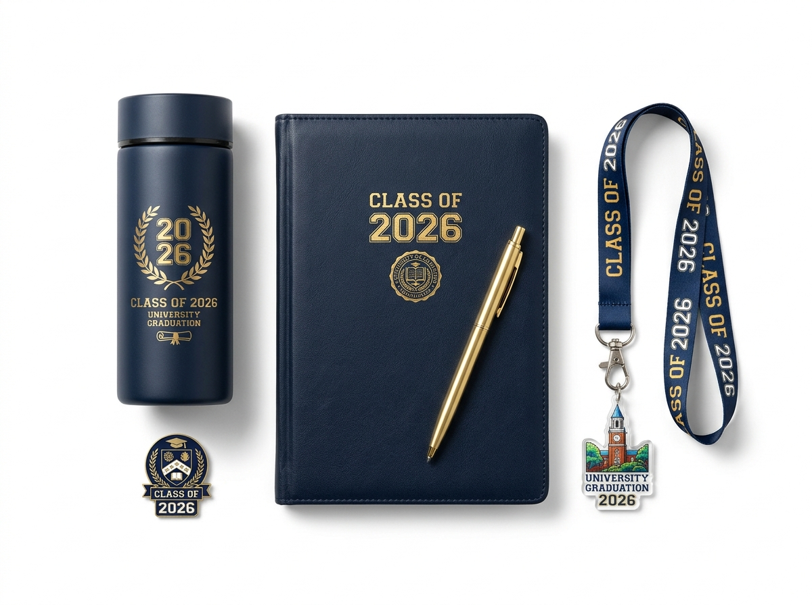
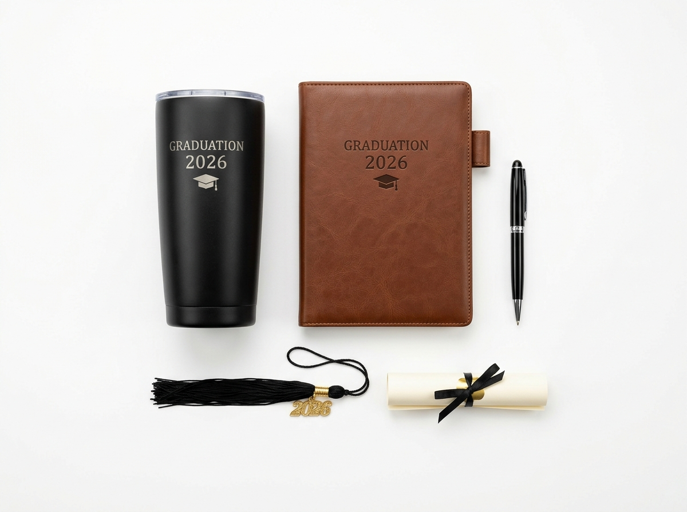

Souvenir Wisuda untuk Panitia Cara Menghitung Budget
Oleh Tim Souvenir Wisuda · Terbit · Diperbarui · 4 menit baca

Rekomendasi Souvenir Wisuda Premium untuk Hadiah Kelulusan yang Elegan
Memberikan hadiah saat seseorang merayakan kelulusan merupakan salah satu bentuk apresiasi atas perjuangan dan pencapaiannya. Setelah melewati berbagai tantangan selama masa pendidikan, momen wisuda menjadi waktu yang tepat untuk memberikan sesuatu yang istimewa.
Salah satu pilihan yang dapat dipertimbangkan adalah souvenir wisuda premium.
Berbeda dengan souvenir sederhana, produk premium biasanya memiliki perhatian lebih terhadap kualitas bahan, desain, detail pengerjaan, serta kemasan. Hal tersebut membuat hadiah terlihat lebih eksklusif dan mempunyai nilai lebih bagi penerimanya.
Namun, memilih souvenir premium bukan hanya tentang harga yang tinggi. Kualitas, fungsi, dan kesesuaian produk juga perlu diperhatikan.
Berikut beberapa rekomendasi souvenir wisuda premium yang dapat dijadikan inspirasi:
1. Gift Box Wisuda dengan Desain Eksklusif
Gift box menjadi pilihan menarik untuk menghadirkan beberapa hadiah dalam satu kemasan.
Isi gift box dapat disesuaikan dengan kebutuhan, misalnya tumbler, notebook, pulpen, gantungan kunci, dan kartu ucapan.
Agar terlihat premium, gunakan kotak dengan bahan kokoh, finishing rapi, serta penataan produk menggunakan foam insert yang dipotong mengikuti bentuk masing-masing barang.
Perpaduan warna navy, putih, dan gold dapat memberikan kesan elegan pada kemasan.
2. Tumbler Stainless dengan Kemasan Premium
Tumbler stainless merupakan produk yang memiliki nilai fungsional sekaligus tampilan modern.
Pilih tumbler dengan material yang berkualitas, finishing yang rapi, dan desain minimalis.
Untuk meningkatkan nilai eksklusivitas, tambahkan grafir nama, logo universitas, atau tulisan khusus.
Tumbler dapat dikemas dalam kotak individual agar lebih menarik ketika diberikan sebagai hadiah.
3. Notebook Hardcover Custom
Notebook hardcover cocok diberikan kepada seseorang yang menyukai kegiatan menulis, mencatat, dan menyusun rencana.
Sampul dapat menggunakan bahan berkualitas dengan tambahan emboss atau cetakan nama.
Desain minimalis dengan kombinasi warna gelap dan aksen gold dapat memberikan tampilan elegan.
Notebook juga dapat dipadukan dengan pulpen premium dalam satu paket hadiah.
4. Pulpen Metal Eksklusif
Pulpen metal mempunyai tampilan lebih elegan dibandingkan pulpen biasa.
Selain digunakan untuk menulis, produk ini juga dapat menjadi aksesori meja kerja.
Untuk souvenir wisuda, pilih pulpen dengan desain sederhana dan tambahan ukiran nama atau tanggal kelulusan.
Kemasan kotak individual akan membuat tampilannya semakin berkelas.

5. Jam Meja atau Jam Digital
Jam meja dapat menjadi hadiah yang bermanfaat sekaligus dekoratif.
Produk ini cocok ditempatkan di meja belajar, meja kerja, maupun kamar tidur.
Pilih desain minimalis dengan tampilan yang mudah dibaca dan material yang terlihat rapi.
Jam digital juga dapat dipertimbangkan sebagai alternatif hadiah modern.
6. Paket Perlengkapan Kerja
Wisuda menjadi awal perjalanan baru menuju dunia kerja atau pendidikan lanjutan.
Karena itu, paket perlengkapan kerja dapat menjadi hadiah yang relevan.
Beberapa produk yang dapat dimasukkan antara lain:
- Notebook hardcover.
- Pulpen metal.
- Tumbler.
- Tempat kartu.
- Pouch.
- Kartu ucapan motivasi.
Paket ini tidak hanya menarik secara visual, tetapi juga mempunyai manfaat untuk aktivitas setelah kelulusan.
7. Plakat atau Miniatur Kenang-Kenangan
Plakat wisuda cocok diberikan sebagai simbol penghargaan atas pencapaian seseorang.
Desainnya dapat menggunakan material akrilik, kayu, atau kombinasi beberapa bahan.
Tambahkan nama penerima, gelar, tanggal kelulusan, dan ucapan khusus agar hadiah mempunyai nilai personal.
8. Paket Souvenir dengan Personalisasi
Personalisasi merupakan salah satu cara untuk membuat hadiah terlihat lebih eksklusif.
Beberapa detail yang dapat disesuaikan antara lain: nama penerima, logo universitas, warna kemasan, pesan motivasi, tanggal wisuda, dan desain khusus pada setiap produk.
Dengan personalisasi, hadiah tidak hanya terlihat menarik, tetapi juga memiliki identitas tersendiri.
Cara Menentukan Souvenir Wisuda Premium yang Berkualitas
Agar tidak salah memilih, perhatikan beberapa aspek berikut:
- Periksa Material Produk: Pastikan bahan yang digunakan sesuai dengan fungsi produk dan memiliki kualitas pengerjaan yang baik.
- Perhatikan Detail Finishing: Produk premium sebaiknya memiliki permukaan yang rapi, cetakan jelas, dan tidak memiliki bagian yang terlihat cacat.
- Pilih Desain yang Tidak Berlebihan: Desain sederhana sering kali memberikan kesan lebih elegan. Gunakan kombinasi warna dan ornamen secara proporsional.
- Gunakan Kemasan yang Mendukung: Kemasan menjadi bagian penting dari pengalaman menerima hadiah. Pilih box yang kokoh dengan interior yang tertata rapi.
- Sesuaikan dengan Karakter Penerima: Pertimbangkan apakah penerima lebih menyukai hadiah fungsional, dekoratif, atau produk yang dapat digunakan dalam aktivitas sehari-hari.
Mengapa Gift Box Menjadi Pilihan Menarik untuk Souvenir Wisuda Premium?
Gift box mempunyai keunggulan karena dapat menggabungkan beberapa produk dalam satu paket.
Selain memberikan tampilan yang lebih menarik, gift box juga memungkinkan setiap barang ditata secara khusus sehingga tidak mudah bergeser.

Beberapa keunggulannya meliputi:
- Tampilan hadiah lebih eksklusif.
- Produk dapat dikombinasikan sesuai kebutuhan.
- Kemasan bisa dibuat custom.
- Cocok untuk hadiah pribadi maupun acara formal.
- Memberikan pengalaman membuka hadiah yang lebih berkesan.
Karena itulah, gift box dapat menjadi pilihan bagi siapa saja yang ingin memberikan hadiah wisuda dengan tampilan lebih istimewa.
Kesimpulan
Souvenir wisuda premium merupakan pilihan hadiah yang dapat memberikan kesan lebih elegan dan berkesan. Mulai dari tumbler stainless, notebook hardcover, pulpen metal, hingga gift box eksklusif, setiap produk memiliki keunggulan tersendiri.
Untuk mendapatkan hasil terbaik, jangan hanya memperhatikan harga atau tampilan luar. Pastikan kualitas material, fungsi, detail finishing, dan kemasan juga menjadi pertimbangan.
Dengan pemilihan yang tepat, hadiah wisuda dapat menjadi bentuk apresiasi yang bermanfaat sekaligus kenangan berharga bagi penerimanya.
Rumus dasar budget
- Jumlah peserta + tamu undangan yang menerima souvenir
- Tambah cadangan 5–10% untuk kerusakan atau peserta tambahan
- Kalikan dengan harga per pcs sesuai tier grosir
- Tambahkan ongkir dan biaya kemasan
Pilih produk sesuai budget
Untuk peserta banyak, pilih produk yang seragam dan ringkas. Untuk tamu kehormatan, siapkan plakat atau hampers yang lebih istimewa.
Timeline pemesanan
Hubungi kami sedini mungkin setelah jumlah peserta mendekati final. Tentukan desain, konfirmasi sampel, lalu lakukan DP. Sisakan waktu cadangan sebelum hari acara.
Dokumen yang membantu penawaran
Siapkan nama instansi, jumlah, logo, alamat pengiriman, dan tanggal acara. Dengan itu penawaran resmi dapat disusun dengan cepat.
Rekomendasi paket
Paket Grosir Kampus & Panitia
Souvenir massal untuk panitia wisuda, kampus, dan instansi dengan harga grosir.
Lihat PaketTanya via WhatsAppFAQ
Apakah ada harga grosir?
Ada. Harga bertingkat berdasarkan jumlah pesanan. Minta penawaran lewat WhatsApp.
Bisakah desain disesuaikan dengan tema acara?
Bisa. Kirim tema, warna, dan logo, lalu kami buatkan rancangan.
Tentang penulis
Tim Souvenir Wisuda adalah pembuat souvenir wisuda custom yang melayani pesanan perorangan, sekolah, dan kampus. Kenali kami.